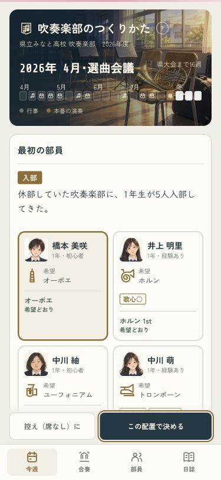
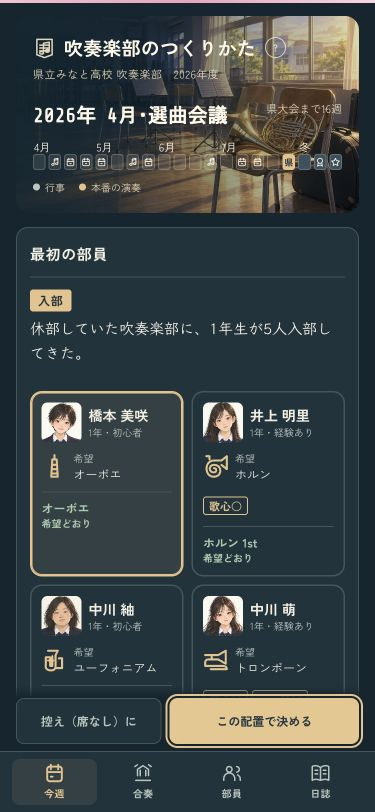
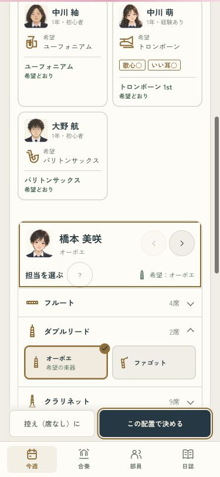
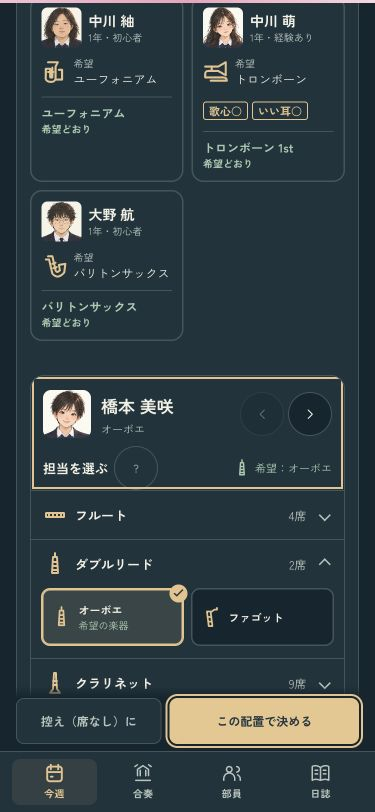
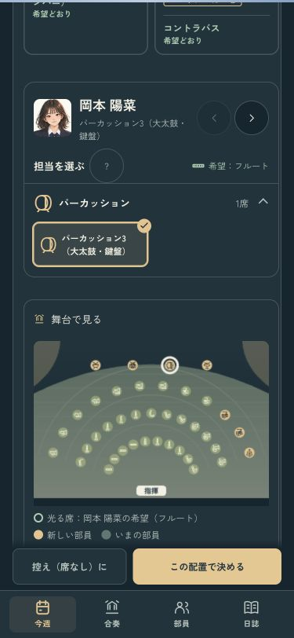
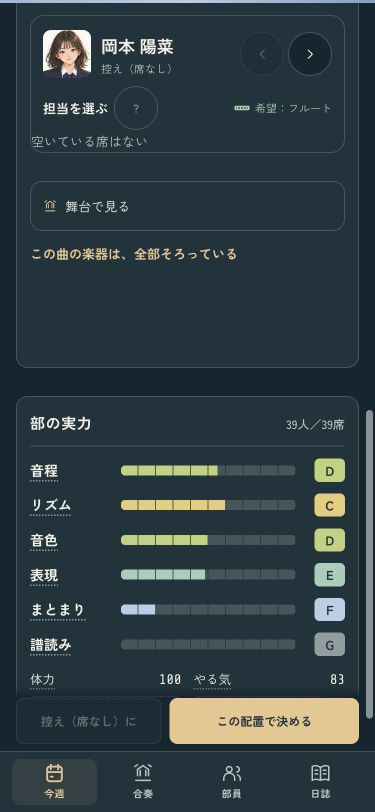

顔と希望を見ながら、楽器を決める
部員の顔と希望の楽器を見比べて、担当を決める画面へ。空いている席を名前で選び、金の枠とチェックで今の担当が分かります。決定ボタンは画面の下に置きました。
確認用の画面です。いつものセーブは書き換えません。
顔・希望・担当を見比べる · 375px
部員の顔を40pxに。希望の楽器にはアイコンを添え、経験や得意わざと、決まった席を分けて見せます。
ライト
ダーク
名前で選べる席 · 375px
選んだ部員を48pxの顔で表示。前後の部員へもその場で切り替えられます。希望や今の担当のパートを開き、空いている席と本人の席から選べます。
ライト
ダーク
先輩のいる入部・満席の入部
舞台の一覧も開いて見られます。満席なら新しい部員は控えに。先輩の席、自動配置、希望によるやる気や経験者の力は、これまでと同じです。
舞台を開く
満席の入部